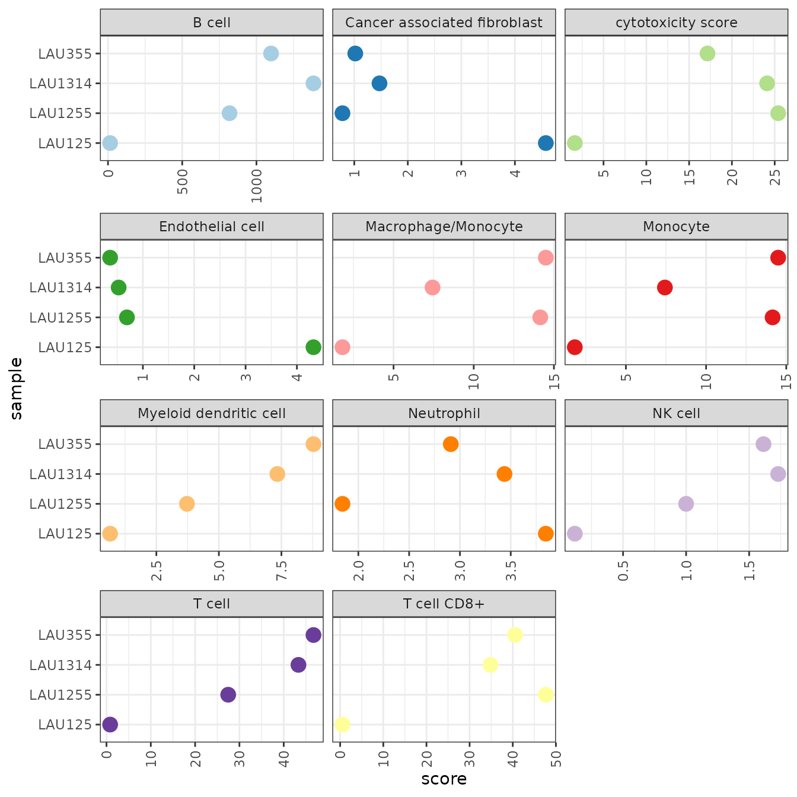
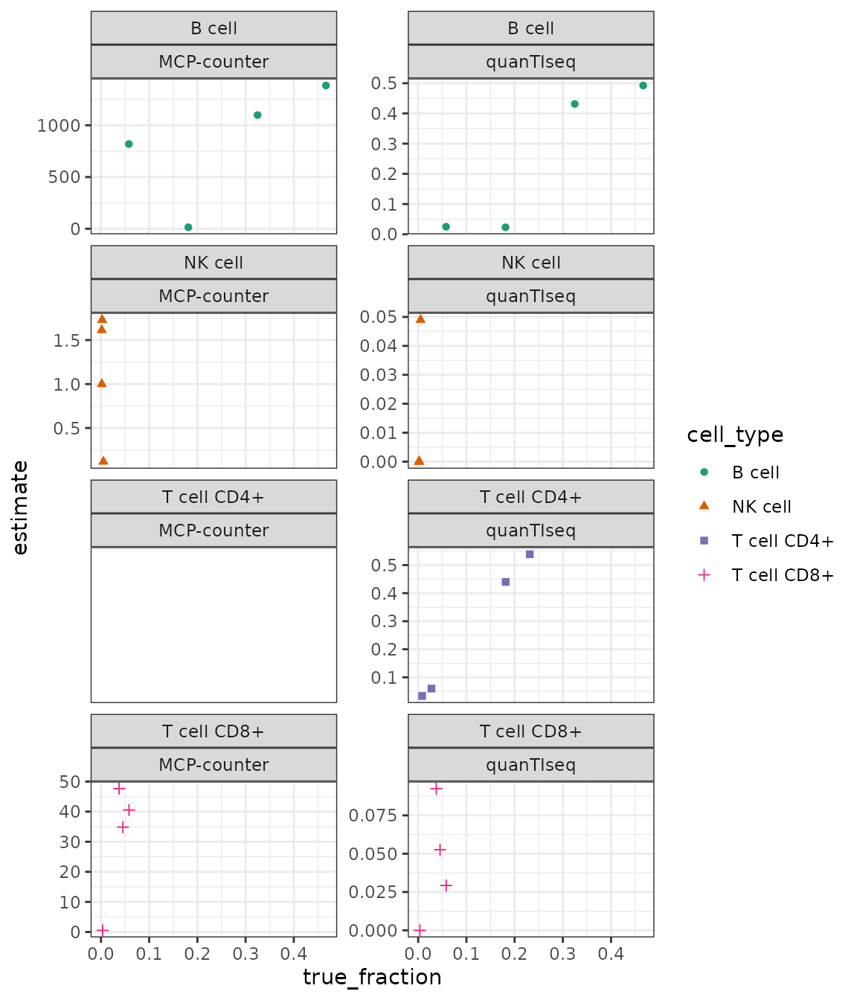

Immunedeconv ships with an example dataset containing purified immune cells extracted from several donors. For demonstration purposes, let’s create a subset of this dataset and estimate immune cell fractions.
Gene expression in rows:
## [1] "A1BG" "A1BG-AS1" "A1CF" "A2M" "A2ML1"Samples in columns:
## [1] "CD4-positive T Cells, donor1" "CD4-positive T Cells, donor2"
## [3] "CD8-positive T Cells, donor1" "CD8-positive T Cells, donor2"
## [5] "Natural Killer Cells, donor1" "Natural Killer Cells, donor2"To estimate immune cell fractions, we simply have to invoke the deconvolute function. It requires the specification of one of the following methods for deconvolution:
## MCPcounter EPIC quanTIseq xCell
## "mcp_counter" "epic" "quantiseq" "xcell"
## CIBERSORT CIBERSORT (abs.) TIMER
## "cibersort" "cibersort_abs" "timer"For this example, we use quanTIseq. As a result, we obtain a cell_type x sample data frame with cell-type scores for each sample.
QuanTIseq generates scores that can be interpreted as a cell-type fraction. Let’s visualize the results as a stacked bar chart with tidyverse/ggplot2.
res_quantiseq %>%
gather(sample, fraction, -cell_type) %>%
ggplot(aes(x=sample, y=fraction, fill=cell_type)) +
geom_bar(stat='identity') +
coord_flip() +
scale_fill_brewer(palette="Paired")
We observe that the correct cell-types are correctly recovered, however we observe small fractions of NK cells and CD4+ predicted to be present in CD8+ T cells and considerable fractions of CD8+ and regulatory T cells in NK cells. This can either be due to the fact that the purification of the samples has not worked reliably or due to spillover-effects between closely-related cell-types (see our benchmark).
Let’s now apply MCP-counter to the same dataset.
MCP-counter provides scores in arbitrary units that are only comparable between samples, but not between cell-types. The visualisation as bar-chart suggests the scores to be cell-type fractions and is, therefore, unsuitable. Instead, we use ggplot to visualize the scores per-cell type, allowing for a relative comparison between samples.
res_mcp_counter %>%
gather(sample, score, -cell_type) %>%
ggplot(aes(x=sample, y=score, color=cell_type)) +
geom_point() +
facet_wrap(~cell_type, scales="free_y", nrow=2) +
scale_color_brewer(palette="Paired", guide=FALSE) +
theme(axis.text.x = element_text(angle = 90, vjust = 0.5, hjust=1))
With the scores being in arbitrary units, the results are not useful for judging if a cell type is present in the sample, or not. However, the score correctly reflects the presence of NK cells and CD8+ T cells in the corresponding samples.